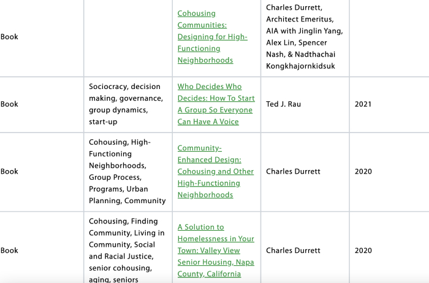
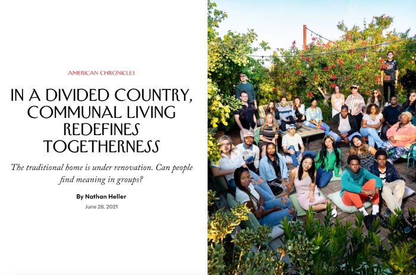

The Cohousing Association of the United States
This website has so much to offer. There are dropdown menus with a multitude of resources. Some parts of the website are designed to be really cute, while others are lacking in the realm of UI/UX.

I think the cover is cute, and I like the slideshow of pictures. But I wish the formatting was more evenly spaced and aesthetic, and that there was more user interaction.
You can see the chart below isn't designed to look good, but rather to be functional. I'm hoping' for my project to do both.
New Yorker: In a Divided Country, Communal Living Redefines Togetherness
I love the look of this New Yorker article! The font is great, the photograph is engaging, and the page comes together really well. I want to design a website that utilizes space like this. I wish they found a way to continue some of these traits in the actual content, but maybe I can find a way to do that!
